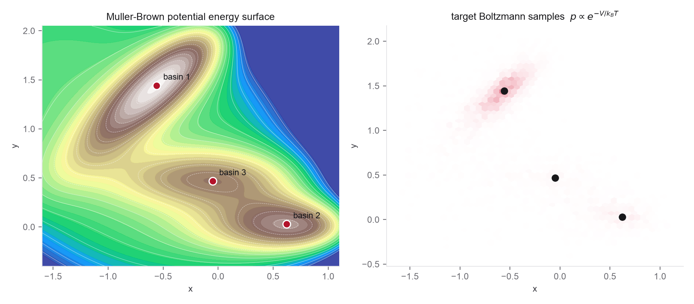

- The DSM objective and EDM preconditioning from Problems 1 and 2
- The reverse SDE and probability-flow ODE you derived in Problem 1
- A basic MCMC sampler (Metropolis-adjusted Langevin) for ground truth
- A small MLP in PyTorch or JAX, conditioned on the noise level
- The Week 1 ODE-solver scaffold (Euler/Heun), reused here for sampling
- Yang Song's blog has a minimal annotated training and sampling loop
- EDM, Algorithm 2 for the Heun sampler you will copy
- The live sampler in the notes is the exact-score version of what you are training toward
- MALA for the ground-truth sampler
This lab trains a real diffusion model, just on a two-dimensional target chosen so you can see everything. The Müller-Brown potential is the classic chemistry test surface: three basins separated by curved barriers, a stand-in for a molecular free-energy landscape over a pair of collective variables. Its Boltzmann distribution \(p(x)\propto e^{-V(x)/k_BT}\) is multimodal, the basins have genuinely different depths, and the barriers make the modes hard to cross, exactly the structure that breaks naive samplers. You will learn its score from data and test whether the generator reproduces not just the basin shapes but their relative populations.

The live sampler below is the answer key: it runs the exact reverse process for a clean multi-well target. Your trained model should reproduce this behavior on the Müller-Brown surface, including the deterministic-versus-stochastic difference.
Reverse diffusion on a multi-well target with the exact score. Toggle the probability-flow ODE against the reverse SDE; both land on the same basins. Your trained score model is an approximation of the field driving this.
Read the trajectories correctly. The reverse SDE and the probability-flow ODE reproduce the same one-time marginals only with the exact score and exact integration, and even then their path laws differ. Neither path is a physical trajectory: a smooth ODE path that crosses between basins is not a reaction mechanism, and a noisy SDE path is not a Langevin trajectory of the system. They are artificial probability-transport paths. Likewise, a trained generator amortizes barrier crossing at generation time, but only because the basins and their weights were already present in the training data; it does not solve the rare-event data-acquisition problem, and an entire basin missing from training will be missing from samples.
Implement a small set of functions with clean interfaces. Because the target is 2D and known, the reference is exact quadrature, not another sampler.
muller_brown(xy) # potential V(x, y), vectorized grid_normalize(kT, box, n) # exact Z and p(x) on a grid (quadrature) basin_assign(xy) # watershed / polygon basin label exact_basin_weights(kT, grid) # integrate p over each basin grid_sample(n, grid, rng) # ~IID reference draws from the grid pmf mala_sample(n, kT, steps) # an imperfect physical sampler, for comparison oracle_score(grid, sigma) # FFT-smoothed p_sigma, then grad log p_sigma edm_precond(sigma, sigma_data) # c_skip, c_out, c_in, c_noise dsm_loss(model, x0_batch, sigma) # denoising score-matching loss heun_pf_ode(model, x_T, sigmas) # deterministic sampler reverse_sde(model, x_T, sigmas) # stochastic sampler
- Exact reference by quadrature. Because the target is two-dimensional and known, do not settle for a sampler as the reference. Normalize \(e^{-V/k_BT}\) on a sufficiently large, fine grid to get \(Z\) and \(p(x)\) directly, at a temperature where all three basins are populated (start near \(k_BT\approx 20\)-\(25\) in the standard units). Check that the probability leaking past the grid boundary is negligible. Define the three basins by a fixed assignment (steepest-descent/watershed or specified polygons), integrate the exact basin weights, and draw approximately IID reference samples from the normalized grid. These exact weights are the answer key for everything below.
- MALA as an imperfect sampler. Now run Metropolis-adjusted Langevin as an intentionally imperfect physical sampler: several independent chains. Compare its estimated basin weights, effective sample size, and chain-to-chain variance against the exact quadrature from part 1. This makes the rare-event/mixing problem the lesson, rather than an uncertain answer key, and shows why a generator that amortizes sampling is attractive in the first place.
- An oracle noisy score. At a few noise levels \(\sigma\), compute the smoothed density \(p_\sigma = p_0 * \mathcal N(0,\sigma^2 I)\) on the grid with a padded FFT convolution, then form \(s_\sigma(x)=\nabla\log p_\sigma(x)\) by finite differences of \(\log p_\sigma\). This is a near-exact target for the learned score at every noise level, far better than a KDE, and you will use it as the yardstick in part 4 and the controlled experiment in part 7.
- Train the score model. Using the grid reference samples as data, implement the EDM-preconditioned denoiser \(D_\theta(x,\sigma)\) from Problem 2 with a small MLP for \(F_\theta\) (two or three hidden layers), sampling \(\ln\sigma\sim\mathcal N(-1.2,1.2^2)\) per minibatch, and train with the denoising loss. Plot the training loss and, at a few fixed \(\sigma\), compare the learned score field \((D_\theta-x)/\sigma^2\) to the oracle score from part 3 on a grid.
- Sample two ways. Generate samples with the Heun probability-flow ODE and with the reverse SDE, reusing your Week 1 solver scaffold for the deterministic one. Overlay both on the contour plot. Confirm that both populate the three basins, the SDE paths noisier and the ODE paths smooth, while remembering (see the note above) that these paths are not physical trajectories.
- Did it get the weights right? This is the real test. Compute the basin populations of your generated samples and compare them to the exact weights from part 1, with error bars. Convert to free-energy differences \(\Delta F_{ij}=-k_BT\ln(p_i/p_j)\) and report the error in \(\Delta F\). A model can put every sample in a valid basin and still get \(\Delta F\) wrong by \(k_BT\); check whether yours does.
- Break it, then explain it. With the oracle score from part 3 in hand, the failure becomes identifiable rather than speculative. Run the matrix: (a) exact score + fine sampler, the reference; (b) exact score + coarse sampler, isolating discretization error; (c) learned score + fine sampler, isolating model/score error; (d) deliberately biased or mode-missing training data, isolating data-coverage error; (e) a truncated Gaussian initialization at \(\sigma_{\max}\), isolating prior-truncation error. Shrink the training set or lower the temperature until the populations come out clearly wrong, then attribute the error to one of these sources and tie it to the annealed-Langevin argument in Song & Ermon.
- Sampler cost. Plot a sample-quality metric (population error or an energy-distance to the reference) against the number of network function evaluations, not nominal steps, so the second-order Heun sampler is compared fairly against Euler. Average the stochastic-sampler metric over several random seeds. Identify the smallest budget that gets the populations within error, and relate the curve to the sampler argument in Problem 2.
- Temperature conditioning (optional). Make the temperature a conditioning input: train on data from several \(k_BT\) and condition \(F_\theta\) on it, then generate at an unseen temperature and compare to a fresh exact-quadrature reference. This is a tiny instance of the conditional Boltzmann generators that Weeks 5 and 9 return to.